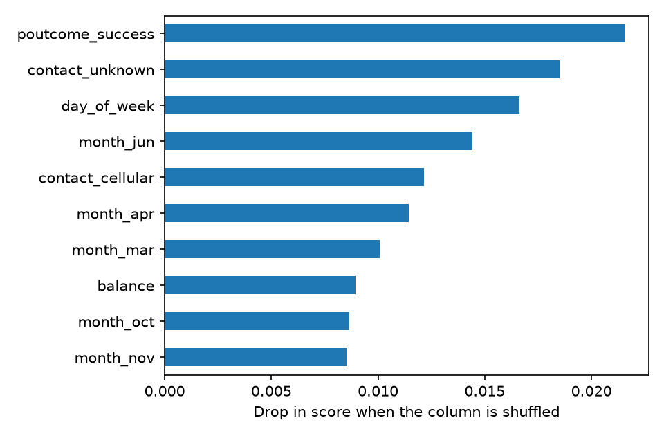
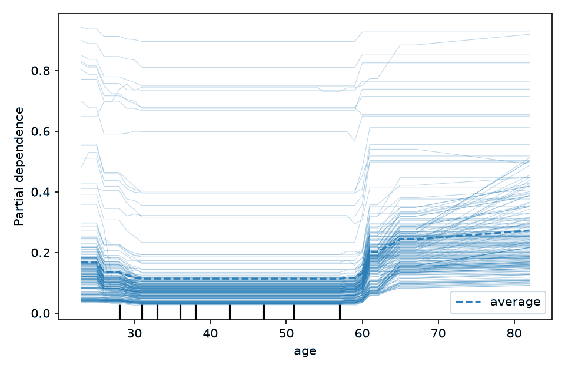
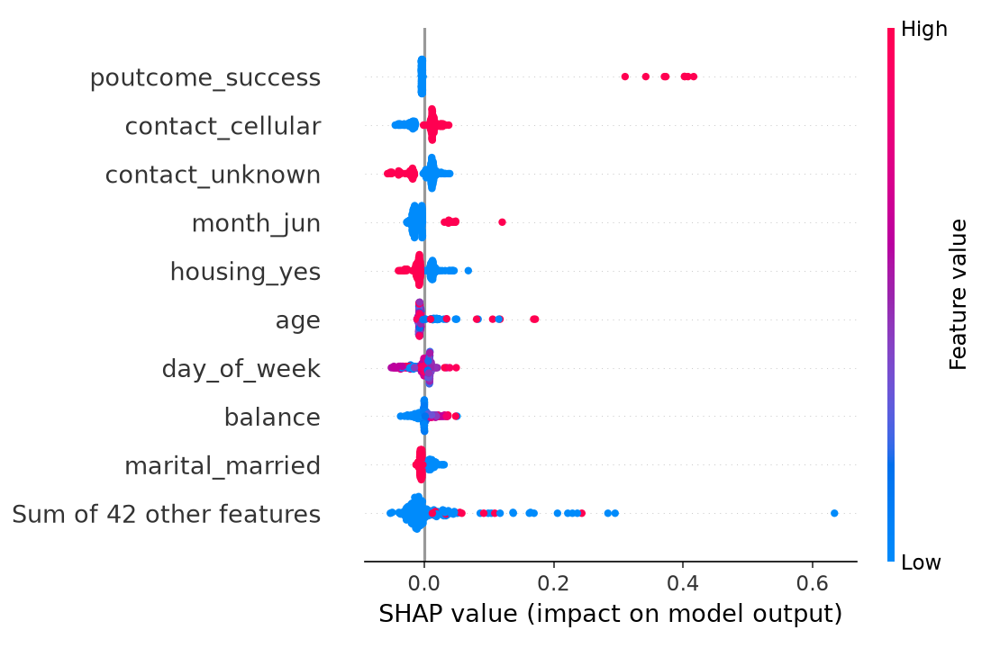
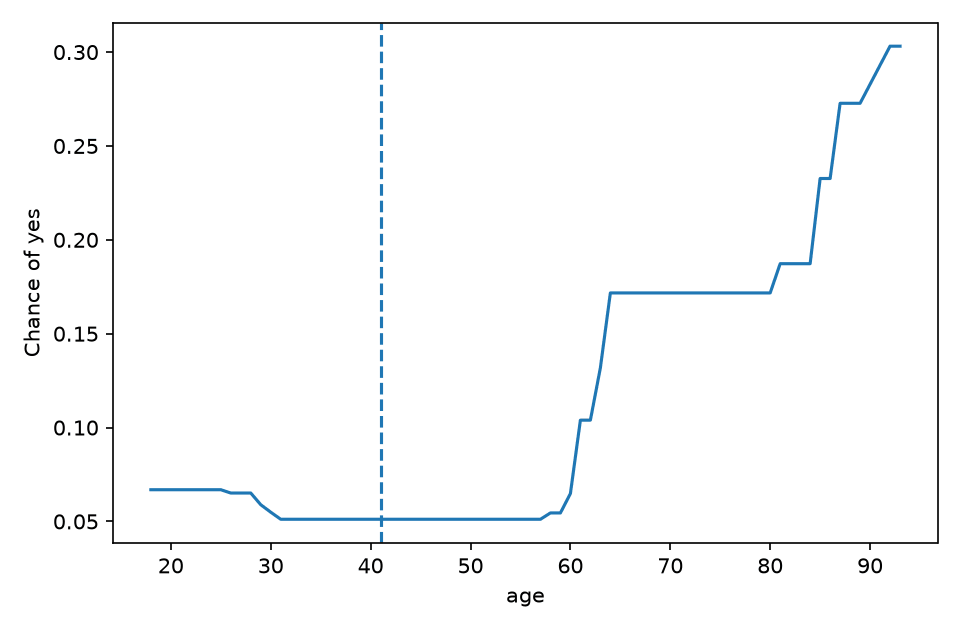
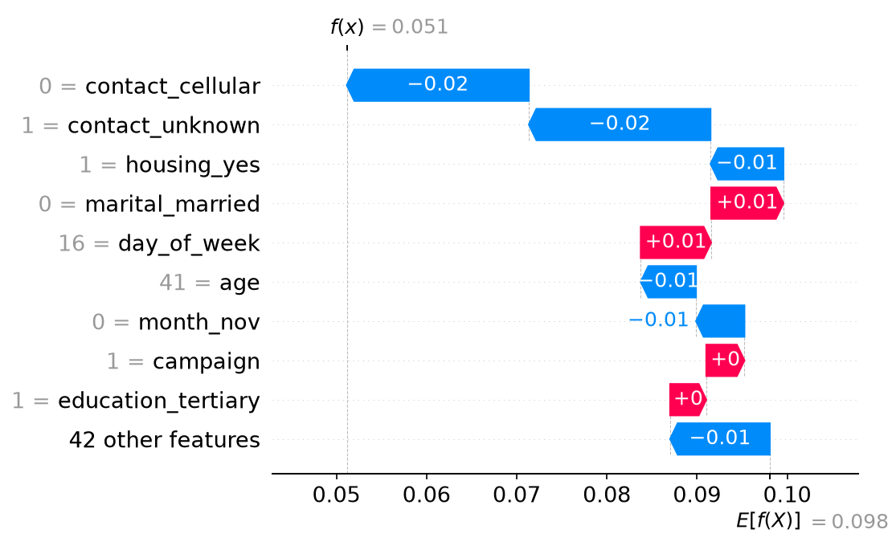
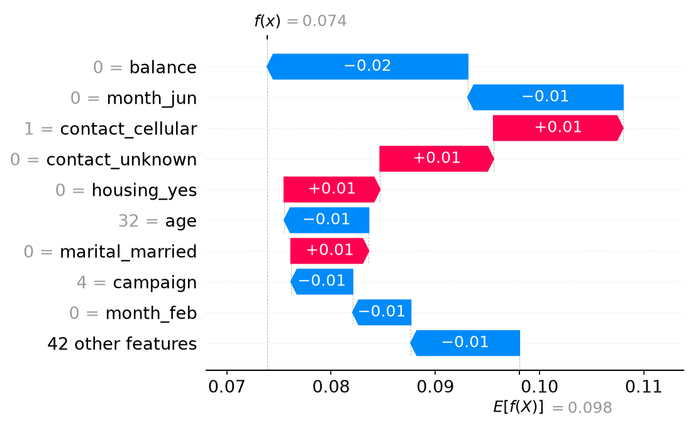

Explain
In the last stage, we measured how well our models guess. In this stage, we open a model up and check what it is using to make those guesses, so that we can decide whether we believe it. The explain stage can be broken into three core questions, which are the three sections below. The code on this page uses the names from the labs (X_train, X_test, y_train and y_test) and a model that you have already trained.
Which columns are most important?
Find the columns that matter most to the model across the whole test set, which is called a global explanation.
How do I explain a specific row?
Take one row, and explain the guess the model made for it, which is called a local explanation.
Does it make sense?
Check what the model uses against what you know about the problem.
A score tells us how often the model is right, but it does not tell us what the model bases its guesses on. The questions below find the columns that are most important to the model across the whole test set. An explanation of the whole model like this is called a global explanation.
A method that describes how the model behaves across the whole test set gives us a global explanation. We met six of them in week 8, and each one has its own question in this section.
- Permutation importance shuffles one column at a time, and measures how far the model's score falls. It works for any model, so it is the one to start with.
- Built-in feature importances are a list that a decision tree, a random forest or a boosting model keeps from its training. They are quick to print, and only tree-based models have them.
- Weights (also called coefficients) are the numbers that logistic regression learns for each column. Only logistic regression has them.
- A partial dependence plot shows whether a higher value in one column raises or lowers the model's guesses. It works for any model.
- A global surrogate is a small tree that we train to copy a model we cannot read, such as a forest, a boosting model, k-NN or an SVM.
- A SHAP beeswarm plot shows how far each column pushes the guesses for many rows at once. It works for any model, and the SHAP library has to be installed first.
Permutation importance tells us which columns matter, and a partial dependence plot tells us which way one of them moves the guesses, so the two go well together. In your report, name the method you used, and say that it gives a global explanation.
First, run this once, in its own cell. It can take a minute.
Then restart the kernel (Kernel, then Restart), so that Python can see the new library, and run your notebook again from the top. Next, we import it:
Nothing prints when this works. If you see ModuleNotFoundError: No module named 'shap', the install has not finished, or the kernel has not been restarted since.
To find out how much the model depends on a column, we shuffle that column's values in the test set, so that they no longer sit on the right rows, and score the model again. If the score falls a long way, the model depends on that column. If the score hardly moves, the model can do without it. This is called permutation importance ("permute" means shuffle).
permutation_importance does this for every column in turn. scoring='roc_auc' names the score that we measure the drop in. We use the area under the ROC curve from the Evaluate stage, as in the week 8 lab, because a drop in accuracy is often too small to see. n_repeats=5 shuffles each column five times and takes the average drop, because a single shuffle can be lucky.
Nothing prints when this works. It scores the model five times for every column, so it can take a minute or two for a forest or k-NN (it took a few seconds for the model here). Next, we put the column names beside the drops and sort them, so that the column with the biggest drop is on top.
poutcome_success 0.022 contact_unknown 0.019 day_of_week 0.017 month_jun 0.014 contact_cellular 0.012 month_apr 0.011 month_mar 0.010 balance 0.009 month_oct 0.009 month_nov 0.009 dtype: float64
Each number is how far the score fell when that column was shuffled. In Bank Marketing, with a gradient boosting model whose area under the ROC curve is 0.797, shuffling poutcome_success lowers it by 0.022. contact_unknown (0.019) and day_of_week (0.017) are close behind. On your own data, look at which columns are at the top, and how far apart they are.
If you encoded your text columns with get_dummies, each category has its own column here (poutcome_success is the success category of poutcome). A column with a drop of 0 is one the model can do without. A small negative number means the score happened to rise a little when the column was shuffled, so read it as 0.
'roc_auc' works when your target has two answers. If it has more than two, you will see ValueError: multi_class must be in ('ovo', 'ovr'), so use scoring='roc_auc_ovr' instead. To measure the drop in the score you chose in the Evaluate stage, put its name there, for example scoring='f1_macro'.
We draw the ten biggest drops as horizontal bars, so that the column names are easy to read. This uses drops from the question above. .sort_values() puts the longest bar at the top of the chart.

There is one bar for each column, and the length of the bar is how far the score fell when that column was shuffled. The longest bar is the column that is most important to the model. On your own chart, look for whether one or two bars stand apart from the rest, or whether the drops are spread evenly.
If you see NameError: name 'drops' is not defined, run both code blocks of the question above first. In your report, give the chart a caption that names the model, and say in words which columns come out on top.
A decision tree, a random forest and a boosting model each keep a number for every column, which measures how much that column's questions helped to separate the answers during training. It is already worked out, so it appears straight away.
poutcome_success 0.378 age 0.081 pdays 0.072 month_mar 0.047 day_of_week 0.044 contact_unknown 0.043 month_apr 0.042 month_jun 0.039 month_oct 0.039 housing_yes 0.032 dtype: float64
These numbers are shares that add up to 1 across all the columns. In Bank Marketing, both lists put poutcome_success first, and they disagree below it. This list puts age and pdays next, while permutation importance put contact_unknown and day_of_week next.
The two can disagree because the built-in number favours columns with many different values, which give a tree more places to ask a question. In our training set, age has 77 different values and contact_unknown has two. The built-in number also comes from the training rows only, while permutation importance uses rows the model has not seen. So we use this list as a quick first look, and permutation importance for the report. If your two lists disagree, say so in your report.
If you see AttributeError: ... has no attribute 'feature_importances_', your model is not tree-based (k-NN, SVM, Naive Bayes and logistic regression do not have this list), so use permutation importance.
Logistic regression multiplies each column by a weight and adds the results up. A positive weight pushes the guess towards the second answer in classes_, and a negative weight pushes it towards the first. The weights are kept in coef_. In the labs, our logistic regression sits inside a pipeline with a scaler, and [-1] picks out the last step of the pipeline, which is the model itself.
['no' 'yes'] campaign -3.80 contact_unknown -0.97 month_jan -0.93 poutcome_failure -0.81 month_aug -0.80 dtype: float64 month_dec 0.73 month_oct 0.76 month_mar 1.09 balance 1.20 poutcome_success 1.42 dtype: float64
The first list is the five most negative weights, and the second is the five most positive. In Bank Marketing, the second answer is yes, so poutcome_success (1.42) pushes hardest towards "yes", and campaign (−3.80) pushes hardest towards "no".
The sizes of the weights can only be compared when the columns are on the same scale, which is one more reason the scaler is in the pipeline. If your logistic regression is not in a pipeline, take out the [-1]. If your target has more than two answers, coef_ has one row of weights for each answer, and [0] is the row for the first answer in classes_.
Permutation importance tells us that a column is important to the model. It does not tell us whether a higher value in that column raises or lowers the guess. To see that, we take some rows from the test set, change only one column, and ask the model to guess again for each value. Everything else about each row stays as it was.
First, we take 200 test rows, because the plot draws one line for every row and more than that is hard to read. .astype(float) turns every column into decimal numbers, which this plot needs.
['no' 'yes']

Along the bottom is the value we pretend the column has. Up the side is the model's chance of the second answer in classes_ ("yes" here), on the axis that scikit-learn labels "Partial dependence". Each thin line is one row, and the dashed line is the average of them all. The small black marks along the bottom show where the real values of the column are.
In Bank Marketing, the average chance of "yes" is about 0.11 for clients between 30 and 60. It rises to about 0.20 just after 60 and to about 0.27 by 75, and it is higher for the youngest clients too (0.17 at 25). So the model has learned that the youngest and the oldest clients say yes more often. On your own plot, look at whether the dashed line rises, falls or stays flat, and whether the thin lines follow the same shape or go their own way.
The dashed average line is the partial dependence plot, and the thin lines are called ICE lines (individual conditional expectation). A plot like this is sometimes called a "what if" plot. In your report, say which column you changed, which way the average line moves, and whether that direction is what you would expect.
If you see ValueError: The column 0 contains integer data, the table went in without .astype(float). If you see ValueError: Feature ... not in feature_names, the column name is not spelled as it is in X_test.columns. If you see ValueError: target must be specified for multi-class, your target has more than two answers, so choose one of the answers in classes_ and add it as target=, for example kind='both', target={model}.classes_[0].
A forest, gradient boosting, k-NN and the SVM cannot be read directly. A tree with two questions can. So we train a small tree to predict our model's guesses, and then read the small tree as a description of the model. The small tree never sees the real answers, because it only learns what our model would say.
|--- poutcome_success <= 0.50 | |--- month_mar <= 0.50 | | |--- class: no | |--- month_mar > 0.50 | | |--- class: no |--- poutcome_success > 0.50 | |--- housing_yes <= 0.50 | | |--- class: yes | |--- housing_yes > 0.50 | | |--- class: no
Each line that starts with |--- is a question, and each class: line is the guess for the rows that reach it. In Bank Marketing, both branches under poutcome_success <= 0.50 end in "no". Under poutcome_success > 0.50, the guess is "yes" when housing_yes is 0, and "no" when it is 1. So the whole small tree says that the model guesses "yes" when the client said yes to the last campaign and has no housing loan, and "no" otherwise.
A copy is only useful if it behaves like the model, so next we count how often the two give the same guess on the test set, and where they differ:
0.985 stand-in no yes model no 13029 9 yes 199 327
The first number is the share of test rows where the small tree and the model agree. In the table, each row is what our model guessed, and each column is what the small tree guessed. In Bank Marketing they agree on 0.985 of the clients, which sounds very close. The bottom row shows the weak spot. Our model says "yes" for 526 clients, and the small tree matches only 327 of them. Most guesses are "no", so agreeing on those is easy.
In your report, give the small tree's rule in words, and always give the agreement beside it, including how well it agrees on the answer you care about. This kind of copy is called a global surrogate model. To let the small tree ask one more question in a row, change max_depth=2 to max_depth=3. The rule gets longer, and the agreement usually rises.
If you see NameError: name 'standin' is not defined, run the first code block of this question first.
SHAP is a library that takes one row at a time. It starts from the model's average chance across a sample of rows, and works out how far each column's value pushed the chance for that row up or down. A beeswarm plot draws those pushes for many rows together, so that we can see the pattern across the test set.
First, install SHAP (see "How do I install SHAP?"). Then we give SHAP 100 training rows to work out the starting chance from. .astype(float) turns any True and False columns into 1 and 0, which SHAP needs.
Next, we ask for the pushes on a sample of 200 test rows, and draw them together. It took a few seconds for the model here. It is slower for a forest or k-NN, and for larger samples.

There is one line for each column, and one dot for each row. A dot to the right of the centre line means that column pushed that row's chance up, and a dot to the left means it pushed the chance down. The colour is the row's value in that column, where red is high and blue is low (for a yes-or-no column, red is 1 and blue is 0). The columns with the biggest pushes on average are at the top.
In Bank Marketing, the top line is poutcome_success. Its few red dots, the clients who said yes to the last campaign, sit far to the right, so that value pushes the chance of "yes" up by 0.3 to 0.4. The red dots for contact_unknown sit to the left, so that value pushes the chance down. On your own plot, pick the top two or three lines, and say which way a high value pushes.
In many_values[:, :, 1], the 1 is the second answer in classes_ (counting starts at 0). To draw the plot for a different answer, change that number.
This plot and permutation importance can put the columns in a different order, because they measure different things. Permutation importance measures what the score depends on, and this plot measures how far the guesses move. In your report, name the top two or three columns, and say which way a high value pushes the guess.
If you see TypeError: ufunc 'isfinite' not supported for the input types, a table went in without .astype(float). If you see AttributeError: This 'SVC' has no attribute 'predict_proba', your SVM was trained without chances, so train it again with SVC(probability=True).
The questions in the first section describe the model across the whole test set. The questions below take one row, and explain the guess the model made for that row. This is called a local explanation.
A method that explains the guess the model made for one row gives us a local explanation. We met four of them in week 8, and each one has its own question in this section.
- Reading a decision tree for one row lists the yes/no questions that the row answered on its way to the guess. It only works when the model is a single decision tree.
- A counterfactual is the smallest change to the row that makes the model give a different answer. It works for any model, and nothing needs installing.
- A ceteris paribus plot draws how the guess for the row moves as one of its values changes. It works for any model, and nothing needs installing.
- A SHAP waterfall plot shows how far each column pushed the guess for the row up or down. It works for any model, and the SHAP library has to be installed first.
Every one of these methods starts from a row, so begin with "How do I choose a row to explain?". In your report, name the method you used, and say that it gives a local explanation.
First, run this once, in its own cell. It can take a minute.
Then restart the kernel (Kernel, then Restart), so that Python can see the new library, and run your notebook again from the top. Next, we import it:
Nothing prints when this works. If you see ModuleNotFoundError: No module named 'shap', the install has not finished, or the kernel has not been restarted since.
Every method in this section explains one row, so first we choose that row and give it the name row. The simplest choice is a position in the test set, where 0 is the first row. .astype(float) turns any True and False columns into 1 and 0, which some of the methods need. We also print the model's chances and its guess for the row, and then the real answer, so that we know what we are explaining.
['no' 'yes'] [[0.95 0.05]] ['no'] 3893 no Name: y, dtype: str
The chances are in the order of classes_. In Bank Marketing, the model gives the first test client a 0.05 chance of "yes", so its guess is "no". The last lines show that this client really said no (3893 is the client's row label in the full table).
A wrong guess often tells us more about the model than a right one. To find one, we ask the model for its guess on every test row, and keep the rows where the guess and the real answer differ.
1447
In Bank Marketing, the model gets 1,447 of the 13,564 test rows wrong. Next, we make the first of them our row, and check what its real answer was.
21225 yes Name: y, dtype: str
This client really said yes, and the model guessed "no". To look at a different wrong guess, change the 0 in wrong.iloc[[0]]. In your report, say which row you chose and why, what the model guessed for it, and what the real answer was.
A decision tree makes its guess by asking a row a short list of yes/no questions, one after another. So when our model is a decision tree, the explanation of one guess is the list of questions that the row answered. A forest or a boosting model is made of many trees, so for those we use the other questions in this section.
decision_path gives us the places in the tree that our row passed through. For each one, we print the column that the tree asked about, the row's value in that column, and the number that the tree compared it with. This uses row from "How do I choose a row to explain?".
['no' 'yes'] poutcome_success is 0.0 and the tree asks whether it is at most 0.5 age is 41.0 and the tree asks whether it is at most 60.5 contact_unknown is 1.0 and the tree asks whether it is at most 0.5 month_oct is 0.0 and the tree asks whether it is at most 0.5 month_nov is 0.0 and the tree asks whether it is at most 0.5 The guess is no [0.96 0.04]
Each line is one question, in the order that the tree asked them. When the row's value is at most the tree's number, the row takes one branch, and when it is bigger, the row takes the other. The last line is the tree's guess, followed by its chance for each answer in the order of classes_.
In Bank Marketing, we trained a decision tree with max_depth=5, so it asks five questions. This client did not say yes to the last campaign (poutcome_success is 0), is 41, which is below the tree's cut at 60.5, and was contacted in a way that was not recorded (contact_unknown is 1). The call was not made in October or November. The tree guesses "no" for every client who gives these five answers, with a 0.04 chance of "yes".
A tree that was trained without a limit on its depth can ask a very long list of questions (see "How do I stop my tree from memorising?" in the Build stage). In your report, give the questions that your row answered in words, and say whether they are sensible reasons for the guess.
If you see AttributeError: ... has no attribute 'decision_path' or AttributeError: 'tuple' object has no attribute 'indices', your model is not a single decision tree. If you see NameError: name 'row' is not defined, run the code in "How do I choose a row to explain?" first.
One way to explain a guess is to ask what would have made it different. We take our row, change one of its values, and ask the model for its chances again. A change that makes the model give a different answer is called a counterfactual. This works for any model, and nothing needs installing.
First, we look at the value that our row really has in the column we are going to change. This uses row from "How do I choose a row to explain?".
[41.]
Next, we try several other values in a loop. Each time, we copy the row, change that one column, and print the model's chances. The numbers in the square brackets are the values to try, so replace them with values that make sense for your own column.
['no' 'yes'] 20 [0.93 0.07] 30 [0.95 0.05] 40 [0.95 0.05] 50 [0.95 0.05] 60 [0.94 0.06] 70 [0.83 0.17] 80 [0.83 0.17]
Each line is the value we tried, then the chance of each answer, in the order of classes_. The model's guess is the answer with the bigger chance, so the guess flips where the bigger number changes sides.
In Bank Marketing, this client is 41, and the model gives them a 0.05 chance of "yes". Changing their age moves that chance, to 0.07 at 20 and 0.17 at 70, but "no" stays the bigger number at every age we tried. So age alone would not have changed the guess for this client. That is a finding too, because it tells us that the model's "no" for this client does not rest on their age.
When the guess does flip, we can explain it in one sentence, such as "if this value had been … instead of …, the model would have guessed …". This is called a counterfactual explanation. In your report, say which column you changed, the value where the guess flips (or that it never does), and whether a change like that could really happen.
If you see NameError: name 'row' is not defined, run the code in "How do I choose a row to explain?" first. If you see KeyError with your column's name, the name is not spelled as it is in X_test.columns. For a column that holds True and False, try the values [0, 1].
The question above tried a few values by hand. To see all of them at once, we draw the model's chance for our row as a line. This is called a ceteris paribus plot ("ceteris paribus" is Latin for "all else being equal"), because only one value changes and the rest of the row stays as it was. It is one of the thin lines from the partial dependence plot, drawn for the row we chose.
First, we list every value that the column takes in the test set. Then we make one copy of our row for each value, change only that column in each copy, and ask the model for its chance of the second answer in classes_. This uses row from "How do I choose a row to explain?".

Along the bottom is the value we pretend the column has, and up the side is the model's chance for our row. The dashed line marks the value that our row really has.
In Bank Marketing, this client is 41, where the chance of "yes" is at its lowest (0.05). The same client would get about 0.07 at 20, and the line climbs steeply just after 60, to 0.17 at 65 and 0.30 at 92. The line never reaches 0.5, so there is no age at which the model would guess "yes" for this client.
On your own plot, look for where the line is steep, because that is where a small change in the value moves the guess most. The line belongs to this one row, and another row can have a different shape. In your report, say which row and column you used, where the chance changes most, and whether the line crosses 0.5.
If you see KeyError with your column's name, the name is not spelled as it is in X_test.columns. A column that holds True and False has only two values, so its line is drawn between two points. If you see NameError: name 'row' is not defined, run the code in "How do I choose a row to explain?" first.
SHAP starts from the model's average chance across a sample of rows, which is its guess when it knows nothing about this row. It then works out how far each column's value pushed the chance up or down, so that the pushes add up to the model's chance for the row.
First, install SHAP (see "How do I install SHAP?"). Then we give SHAP 100 training rows to work out the starting chance from. .astype(float) turns any True and False columns into 1 and 0, which SHAP needs.
Next, we ask for the pushes on row, the row we chose in "How do I choose a row to explain?". We print classes_ as well, so that we know which answer the plot is about.
['no' 'yes']

Read the plot from the bottom to the top. It starts at E[f(X)], the average chance across our 100 sample rows (0.098 for "yes" here). Each bar is one column's push. A blue bar pushes the chance down, and a red bar pushes it up. The grey number beside each name is this row's value in that column. The plot ends at f(x) at the top, which is the model's chance for this row.
In Bank Marketing, the model gives this client a 0.05 chance of saying yes. The two biggest pushes are about how the client was contacted, because contact_cellular = 0 and contact_unknown = 1 each take about 0.02 off the starting chance. The smallest 42 pushes are added together in the bottom bar.
In shap_values[0, :, 1], the 0 is the first row we asked about, the : is every column, and the 1 is the second answer in classes_ (counting starts at 0). To explain a different answer, change the last number.
The same two lines explain any row. When row is the first wrong guess from "How do I choose a row to explain?", we get this plot.

This client really said yes, and the model gave them a chance of 0.07. In the plot, a balance of 0 is the biggest push down (−0.02), and being contacted by mobile phone (contact_cellular = 1) pushes up by 0.01, which is not enough to change the guess. No column gave the model a strong reason to say "yes" for this client.
In your report, say what the model guessed for your row, and which columns pushed it there. For a wrong guess, say what the real answer was too.
In the week 8 lab we used shap.TreeExplainer, which is a faster tool for tree-based models and draws the same kind of plot. For gradient boosting its numbers are scores, not chances (the plot for this same client runs from −2.352 to −2.92), so they cannot be read as a share. The tool on this page works for any model, and its numbers are always chances.
If you see NameError: name 'row' is not defined, run the code in "How do I choose a row to explain?" first. If you see TypeError: ufunc 'isfinite' not supported for the input types, a table went in without .astype(float). If you see ValueError: could not convert string to float, one of your columns still holds text, so encode it first (see "How do I turn a text column into numbers?" in the Prepare stage). If you see AttributeError: This 'SVC' has no attribute 'predict_proba', your SVM was trained without chances, so train it again with SVC(probability=True).
The plots show us what the model uses. They cannot tell us whether that is reasonable. The questions below check the model's top columns against what we know about the problem, and set out what these tools leave unanswered.
First, look up what each of your top columns means in your dataset's documentation. Then check how the column lines up with the target in the data itself. For a yes-or-no column, pd.crosstab counts each answer for each value, and normalize='index' turns each row of counts into shares.
y no yes poutcome_success False 0.90 0.10 True 0.35 0.65
In Bank Marketing, the dataset's documentation says that poutcome is the outcome of the previous marketing campaign. The table shows that 65% of the test clients with poutcome_success said yes this time, against 10% of the rest. A client who said yes before saying yes again is what we would expect, so we call this column sensible.
For a number column, draw it against the target (see "How do I visualise a number column against the target?" in the Visualise stage). If a top column has no link to the problem that you can explain, call it surprising, and look into it with the next question. In your report, name your top two or three columns, and say for each whether it is sensible or surprising, and why.
For each top column, ask when its value becomes known. If it is only known after the thing we are predicting has happened, a model that uses it will score well on our test set and be of no use for a real guess. This is called leakage.
Bank Marketing has a column like this. The documentation says that duration, the length of the phone call, is not known before the call is made, and that the answer is known by the time the call ends. In the labs we removed it. When we put it back, the model's accuracy rises from 0.893 to 0.907 and its area under the ROC curve from 0.797 to 0.926, and permutation importance looks like this:
duration 0.224 contact_unknown 0.018 poutcome_success 0.017 month_mar 0.010 month_jun 0.008 dtype: float64
duration goes straight to the top, with more than ten times the drop of the next column. A column that towers over the others in this way is worth checking against the documentation.
If you find a column like this in your own data, remove it from your table before the train and test split, then train and score your models again:
Nothing prints when this works. If you see KeyError: "['duration'] not found in axis", the column has already been removed, or the name is spelled differently. In your report, say which column you removed and why, and give the score before and after.
First, they show what the model uses, which may differ from what causes the answer. In Bank Marketing, the model relied on duration when it had it, and a long call does not make a client say yes. So write "the model relies on this column", and avoid "this column causes the answer".
Second, when two columns say nearly the same thing, they share the credit. If we shuffle one, the model still has the other, so both can look less important than they are. If your heatmap in the Visualise stage showed two strongly linked columns, read their importances together.
Third, they can only rank the columns the model was given. Anything that matters to the problem and is missing from your table cannot appear in any of these plots.
In your report, pick the limit that applies most to your own dataset, and say how it affects what you can conclude.